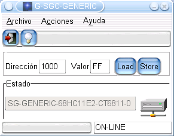
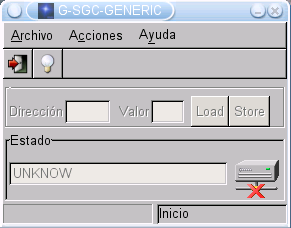
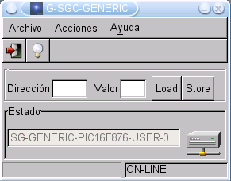
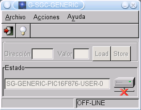
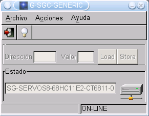

| G-SGC-GENERIC: CLIENTE PARA STARGATE GENERICO |
| [Introducción] | [caracteristicas] | [Funcionamiento] | [Autor] | [Licencia] | [Download] | [Links] | [Noticias] |

Para probar el Stargate genérico, se ha desarrollado un cliente gráfico de pruebas, g-sgc-generic, basado en la libstargate 1.0. Nos permite acceder al mapa de memoria del microcontrolador de una forma fácil y sencilla, y realizar diferente pruebas. Resulta muy útil para:
Al arrancar el programa, comprueba si hay un Stargate conectado al puerto serie (servicio PING) y lo identifica (Servicio ID).
|
 |
 |
| 1) No se ha detectado ningún Stargate | 2) Detectado un Stargate Genérico, implementado en un PIC16F876 |
El cliente está constantemente chequeando el estado de la conexión. Si se pierde nos informa. Es posible conectar y desconectar Stargates "en caliente". Si se conecta un nuevo Stargate, el cliente lo identificará.
Solo en el caso de que sea un Stargate genérico, el usuario tendrá acceso a los servicios LOAD y STORE. En la figura 3 se ha desconectado el Stargate genérico. El interfaz muestra que no hay conexión. A continuación (figura 4) se conecta a un Stargate de tipo Servos8, implementado en una tarjeta CT6811. Vemos cómo el programa nos lo muestra, pero ahora el usuario NO puede usar los servicios LOAD y STORE.
|
 |
 |
| 3) Stargate genérico desconectado | 4) Conectado a un Stargate Servos 8, en una tarjeta CT6811 |
| Ficheros para descargar |
| g-sgc-generic-1.0.tgz (19KB) | Fichero fuente. Versión 1.0 |